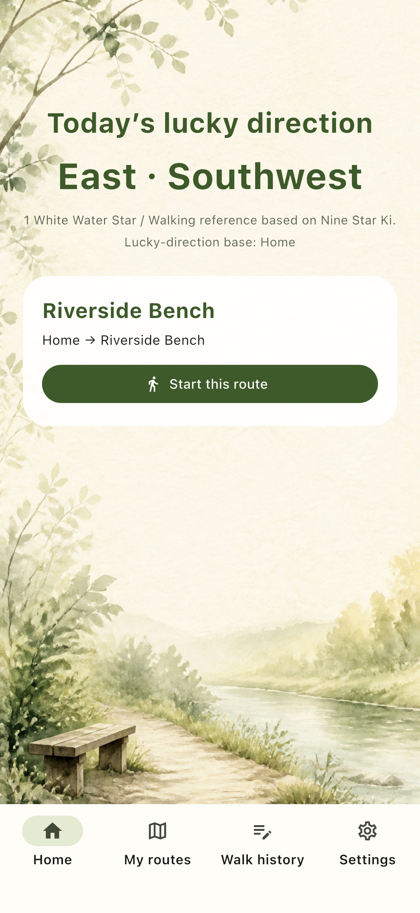
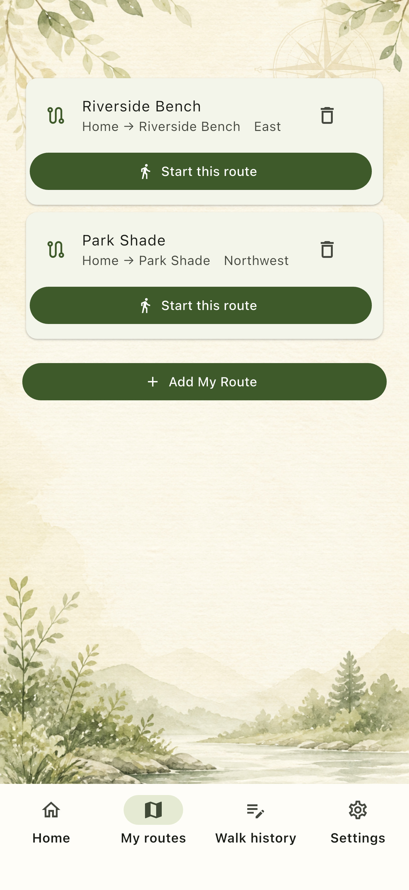
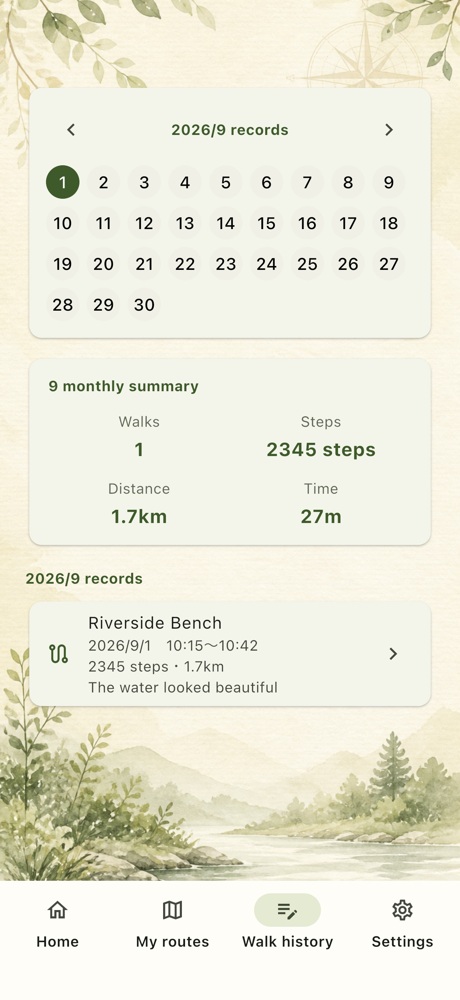
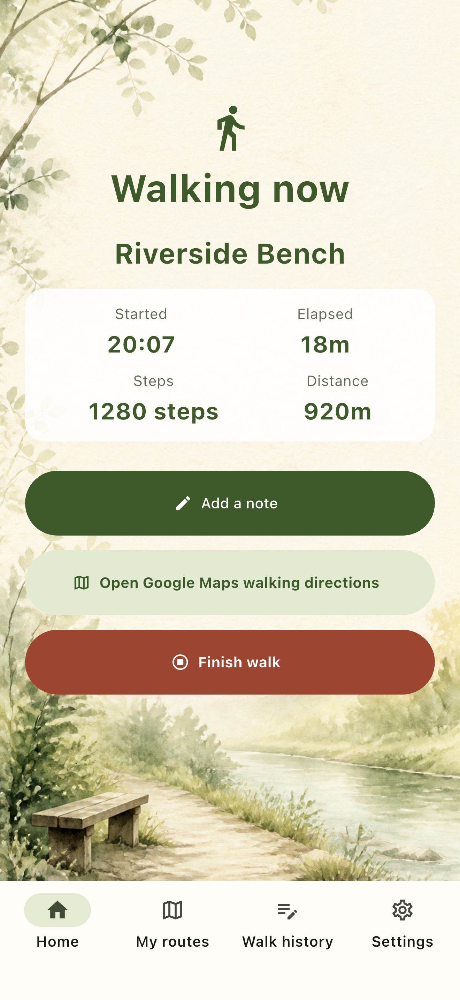

Use today's lucky direction
as a reference
KICHIMICHI shows today's direction based on Nine Star Ki. A gentle reference when you are deciding where to go.
A WALKING APP TO HELP YOU TAKE THE FIRST STEP
KICHIMICHI helps you choose one walk from your saved routes, using today's lucky direction as a reference.
Free to use. You can also skip the direction and start directly from any saved My Route.

01 / ABOUT
KICHIMICHI is a free walking app that helps you choose a route from saved My Routes, open walking directions, and keep a record of your walk—with today's lucky direction as a reference.
For days when you cannot decide where to go, or when you want to make walking a habit. Choose “this one today” from paths you already know, without spending time planning.
Explore the features02 / FEATURES
Whether you use today's lucky direction as a reference or choose a familiar route, KICHIMICHI brings the steps for starting a walk into one quiet flow.

KICHIMICHI shows today's direction based on Nine Star Ki. A gentle reference when you are deciding where to go.

Save starting points, destinations, waypoints, and mood tags. Call up your favorite neighborhood walks whenever you want.

Open walking directions for your chosen route in an external map app or browser. Google Maps is preferred.

Record steps, distance, time, mood, and notes. Look back on past walks in a calendar or list.
03 / HOW IT WORKS
Set up once, save your paths, then choose a walk for the day.


Set the information used to show today's direction on your device.

Name your favorite walking route and keep it in My Routes.

Open walking directions, then leave a record after your walk.
04 / IN THE APP
A calm interface that keeps today's next step in view. Explore KICHIMICHI's five screens along the flow of a walk.
On the home screen, see today's lucky direction and your saved My Routes together. Choose a suggested route when one fits, or ignore the direction and decide for yourself.

To the neighborhood park, to the bench by the river. Name and save a route so it is ready the next time you want to walk. Start with My Routes before searching for somewhere new.
See steps, distance, and elapsed time while walking, then add a mood or note. Your walks quietly add up in the calendar and list.
Learn about privacy and location

05 / SAFETY & PRIVACY
KICHIMICHI is here to give you a reason to start walking. It does not treat direction or measurements as promises of any kind.
KICHIMICHI shows directions based on Nine Star Ki, but does not guarantee good fortune or health benefits.
KICHIMICHI is not designed to track your location at all times. When your current location is used, follow your iPhone permission settings.
Saved routes and walk records are handled on your device without requiring a login or cloud sync.
Check traffic, weather, road safety, and your condition. Use KICHIMICHI within what feels safe.
06 / FAQ
About lucky directions, location, and saved routes. Here are the things to know before you start.
KICHIMICHI shows directions based on Nine Star Ki as reference information when you are thinking about where to walk. It does not guarantee good fortune or health benefits.
Yes. You can ignore the lucky direction and choose any walk from your saved My Routes.
No. KICHIMICHI is not designed to track your location with GPS at all times. When your current location is used, follow your iPhone permission settings and the in-app explanation.
No. KICHIMICHI does not automatically generate road-following loop routes. You choose today's walk from routes you saved in advance.
The initial version is designed for iPhone. On iPad, we plan to use the iPhone version as-is.
07 / START YOUR WALK
Free to use. Available now on Google Play.